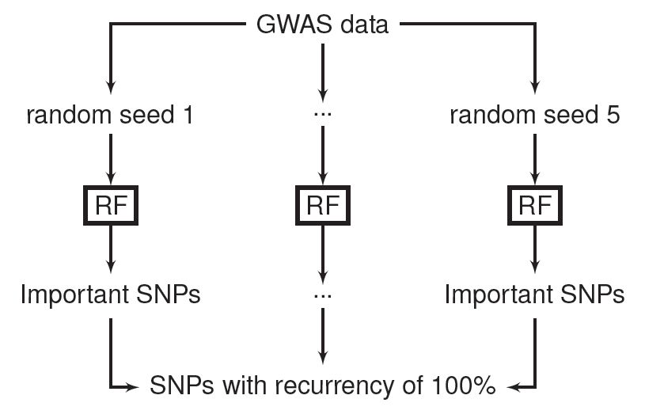
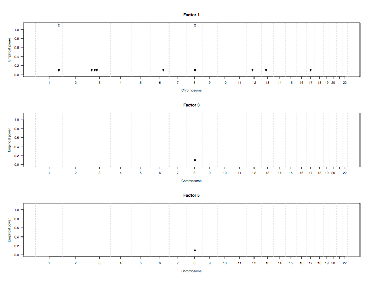
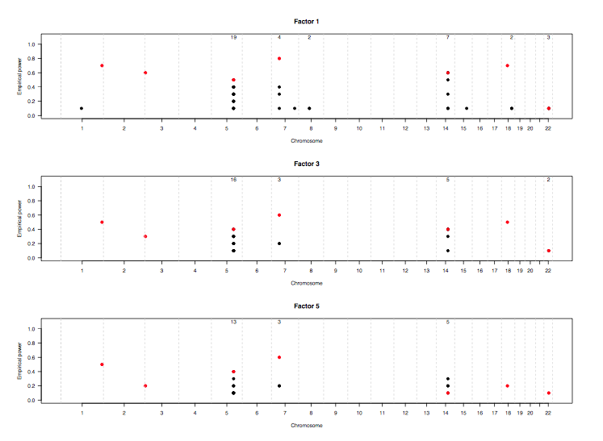
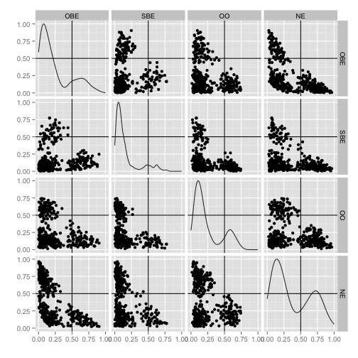

- The framework we have created around the concept of probability machines has led to several developments and extensions by collaborators that allow different problems to be addressed directly
- We are creating a new ecosystem in which parametric specification of relationships in a regression setting is unnecessary and, in fact, redundant
- Most of what follows is unpublished, so please be selective in your sharing.
The post-parameter ecosystem
Applications of probability machines and related developments
Abhijit Dasgupta and James Malley
The post-parameter ecosystem
The post-parameter ecosystem
The new nomenclature
Machines
- Probability machine
- Counterfactual machine
- Risk machine
Interactor
Recurrency and probabilistic ranking
Entanglement maps
Machine collectives
- Probability collective
- Risk collective
Recurrency for variable selection
Recurrency
This work is primarily by Silke Szymczak and Joan Bailey-Wilson at NHGRI
The basic idea
- Run RF repeatedly on the same dataset using different seeds
- Compute variable importances
- See which variables consistently stay at the top
Recurrency

Recurrency
Initial experiments concentrated on filtering
We found that filtering based on a factor of the minimum absolute variable importance removed many false positives
Select variables in each run with raw importance scores > (factor) x minimum absolute importance score
Simulation with a null model and a model with 9 independent SNPs with different MAF, effect sizes and LD structure
- 550K SNPs
- 1000 cases and 1000 controls
Recurrency
Null model

Recurrency
Main effects model

Recurrency

Entanglement maps
Entanglement maps
This work is primarily by Dede Greenstein (NIMH) and Abhijit Dasgupta (NIAMS)
The basic idea
- Context is large multivariate data collected on individuals (SNPs, pixels from images)
- Predict each variable using the rest using a learning machine and compute importance scores
The importance score is a "metric" of the predictive strength of one variable on another in the context of the other variables
- It accounts for the landscape
We want to capture which pairs of variables have a strong dependency on each other in a predictive sense
The dependency need not be symmetric, though we have implemented a symmetrized version
Entanglement maps
Comparison of brain images in childhood ADHD from different age groups
We created entanglement maps for different regions of the brain for different age groups
We can compare the maps formally using a permutation test based on the matrix Frobenius norm
Entanglement maps


Entanglement maps

Synthetic features
Synthetic features
This work is primarily by Qinxin Pan and Jason Moore (Dartmouth) and James Malley (NIH)
The basic idea
- There is biological information about the functional relationship between groups of genes/proteins (networks)
- We can create small learning machines using just these networks
- We can then use these network machines as inputs (synthetic features) in a larger machine that looks at the overall landscape in predicting outcome
Probability collectives (COBRA)
Probability collectives (COBRA)
This work is primarily by Aurelie Fischer, Benjamin Guedj and Gerard Biau (Paris) inspired by James Malley (NIH)
The basic idea
Mojirsheibani (1999) proposed the idea of combining classifiers such that the collective provably does better than any individual machine in the collective
- Note that this is not an ensemble method
The Paris group, inspired by Jim, has extended this to collectives of regression machines
- Non-trivial mathematics involved
- Leverages work of GKKW as well as DGL
R package forthcoming in Q1
COBRA

Scanning the genome
Transcription start sites in Drosophila
This work is primarily by Anthony Fletcher and Jim Malley
The basic idea
- Transcription start sites based on tetrameric structure of genome
Scan the genomic tetramers using probability machines
- Learn from known data
- Provide probability estimtes for start sites for entire genome
A new algorithm for finding the most predictive nodes in a tree/forest
Drosophila genome (155M)
Transcription start sites in Drosophila

Understanding regression structures
Probability machines for understanding structure
This work is primarily by Abhijit Dasgupta (NIAMS)
The basic idea
- Run probability machines as a first pass at the data
- The nonparametric nature of PM allows agnostic capture of the patterns in the data
- Graphically look at marginal patterns, interactions, other interesting ideas
- Use as a check on data quality
- Use this as a discovery tool for further modeling and analysis
Probability machines for understanding structure
Childhood obesity and eating patterns (Yanovski, NICHD)

Probability machines for understanding structure
Childhood obesity and eating patterns (Yanovski, NICHD)

Probability machines for understanding structure
Childhood obesity and eating patterns (Yanovski, NICHD)

Upcoming attractions
What we're working on
- Probability machines with continuous predictors
- Probability machines for case-control studies
Probability machines for clustered data
- Repeated measures
- Matched studies
Risk machines for survival studies
Competing risks for survival studies using synthetic features
Probability machines for propensity scoring
Acknowledgements
Chefs in the kitchen
- Jason Moore (Dartmouth) @moorejh
- Joan Bailey-Wilson (NHGRI)
- Silke Szymczak (NHGRI)
- Gerard Biau (Paris)
- Brian Oliver (NIDDK)
- Dede Greenstein (NIMH)
- Michael Ward (NIAMS)